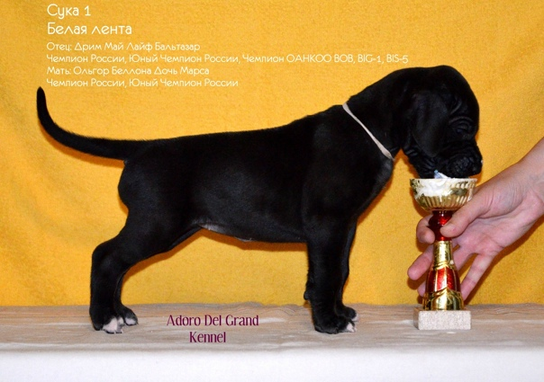

Оценка четырех-шестимесячного щенка
оригинальный рисунок Jill Evans (с)2001
 |
 |
 |
 |
 |
 |
|  |  |
 |
 |
 |
 |
***
Сохранение породных признаков
Все породы собак, и дог - не исключение, были получены в результате инбридинга. Инбридинг (скрещивание родственных особей разного пола в рамках одного вида или породы) сознательно используется в селекции животных и двудомных растений для увеличения гомозиготности потомства и, как следствие, увеличения вероятности сохранения потомками желаемых признаков. Инбридинг характерен также для самой распространенной породы собак, не подлежащей селекции, вследствие поведенческих, социальных и эволюционных факторов. Предложенный 100 лет назад Сьюэлом Райтом и Густавом Малеко коэффициэнт инбридинга показывает степень родства между предками участника популяции. Он определяется как вероятность того, что две случайно выбранные аллели в гомозиготном состоянии у потомка будут одинаковыми. Коэффициент инбридинга позволяет оценить уровень гетерозиготности и родственности между особями. Инбридинг в целом используется для стабилизации устойчивого наследования желаемых признаков и уменьшения внутрипородных вариаций. Различают индивидуальный коэффициент (расчитанный для одной особи) и популяционный (характеризующий все или большую группу особей внутри породы, например, в рамках региона обитания). Точность индивидуального коэффициента увеличивается с количеством анализируемых предков. Принято считать, что достоверный индивидуальный коэффициент инбридинга расчитывается на основе анализа родственных связей 16 поколений. Расчитанный на основании анализа 4-5 поколений коэффициент инбридинга может измениться на 30% при анализе всех 16 поколений предков.

Аутбридинг - скрещивание особей одного вида или породы, неродственных друг другу или связанных менее тесным родством, чем в среднем в популяции. В результате аутбридинга получается гетерозиготное потомство, в ряде случаев более устойчивое в среде обитания, чем гомозиготное (т. н. эффект гетерозиса). Несмотря на очевидные достоинства аутбридинга, связанные с гетерозисом, он может приводить к так называемой аутбредной депрессии вследствие разрушения эволюционно сложившихся и приспособленных к конкретной среде обитания согласованных взаимодействий комплексов генов. Проблемой является также относительно низкая наследуемость ценных признаков у особей, полученных в результате аутбридинга.

В идеальном мире риски появления заболеваний и нежелательных признаков, связанные с переводом рецессивных форм аллелей в гомозиготное состояние бесконечно малы из-за бесконечно большого количества особей, принимающих участие в размножении, работы заводчиков по ограничению размножения больных животных или особей с нежелательными признаками (а в идеале - не соответствующих стандарту породы), отсутствию необходимости вовлекать в размножения особей несколько раз. В реальном мире этичный заводчик вынужден минимизировать риски и добиваться соответствия стандарту с использованием различных методов, включая импорт собак, увеличение возрастного порога вовлечения в размножение, комбинирование инбридинга и аутбридинга, выведение из программы размножения особей на основе медицинских и генетических тестов.
Существует некоторая путаница в отношении понятия коэффициента близкородственного скрещивания. Большинство программ и методик используют формулу Райта, но есть и другие методы, которые можно использовать для расчета инбридинга, формула Райта при этом также имеет вариации.
Формула Райта и метод Хардимана основаны на принципе, что инбридинг особи равен половине родства ее отца и матери, однако в расчетах используются разные данные, поэтому коэффициенты инбридинга, полученные с их помощью, не являются взаимозаменяемыми и не должны сравниваться друг с другом. Формула Райта бессистемно рассчитывается для любого количества поколений, в то время как метод Хардимана всегда рассчитывается для пяти поколений.
Формула Райта учитывает встречающихся дважды в родословной предков только в том случае, если они являются общими для кобелей и сук, в то время как метод Хардимана учитывает всех дублированных предков.
Коэффициент инбридинга не имеет особой ценности без стандарта, поэтому его истинная ценность в сравнении со средним показателем по породе.
Хардиман будет более точным показателем вероятного сокращения генофонда того или иного гена, являющегося предметом анализа. Существует разница, и, вероятно, большая разница, в результатах двух расчетов. Хардиман имеет вероятное преимущество в том, что количество поколений ограничено более поздними поколениями предков, поэтому а) мы можем предположить, что знаем, какими проблемами (или достоинствами) могут обладать предки б) данные, вероятно, будут более точными, поскольку некоторые программы расчетов Райта просто игнорируют отсутствующщую информацию о предках в родословной. На самом деле собачий мир еще не дозрел до использования уравнения Хардимана. Оно датируется 1920 годом, а за прошедшие после работ Райта годы было предложено множество других формул, в том числе в 1948 Malecot, в 1962 Кудо, далее Кудо и версия Сакагучи, учитывающая также Х-гены, потом в 1997 Баллу.
Около 100 лет у селекционеров есть возможность использовать в своей работе коэффициент близкородственного скрещивания. COI - это математическое представление вероятности того, что потомство от спаривания будет иметь две копии одного и того же рецессивного гена или одного и того же доминантного гена - на "генетическом языке" aa или AA. Точно так же, как схема оценки дисплазии тазобедренного сустава, которая суммирует оценки по различным признакам, свидетельствующим о заболевании вывиха бедра, является для заводчиков и владельцев индикатором, позволяющим "визуализировать" вероятность того, что серьезный вывих бедра станет проблемой и вызовет боль.
COI дает ответственному заводчику значение вероятности того, что у особи (или особей в помете) будет выражен рецессивный ген или аутосомно-доминантный ген, так что на самом деле эти особи будут либо аа, либо АА. COI лучше всего понять при рассмотрении рецессивных генов (классическим примером которых у спаниэлей является мутация, приводящая к дефициту PDP1). Чтобы у особи проявилась болезнь (или, наоборот, ее отсутствие!), она должен получить один и тот же рецессивный ген от обоих родителей, по одному от каждого. "Проблема" с рецессивными генами заключается в том, что они могут скрываться в популяции, не проявляясь (если особь является аа, то признак выражен, и не аа, когда особь является носителем, но признак не выражен) в течение многих, многих поколений.
Поэтому заводчики иногда могут считать, что генетически рецессивный недостаток (или достоинство) убраны - но в один прекрасный день начинают появляться новые особи с этим достоинством (или болезнью), поскольку Аа и Аа скрещиваются вместе и рождаются и вырастают особи аа. По открытым родословным генетики могут дать заводчикам уверенность в том, что рецессивный (или доминантный) ген не проявится у особей, уменьшив количество вероятных носителей в родословной. Это концепция "удара в темноту", но она вполне работает. Нет никакой уверенности в том, что другие особи, ранее не использовавшиеся в питомнике, не окажутся "тайными" носителями той же проблемы (гена), но, как и при подбрасывании монетки, помогает статистика.
Большинство (если не все) пород собак возникло и развивалось путем инбридинга, инбридинг концентрирует в особях "желательные" признаки, и, естественно, для накопления желательных признаков в тех же собаках могут накапливаться другие, менее желательные признаки, поэтому относительная популяция "опасного" гена в племенном поголовье может увеличиваться.
Таким образом, заводчик, принимающий во внимание и уважающий необходимость низкого значения COI, может использовать генетический анализ для своей пользы. COI - это инструмент, и инструмент полезный - использование одной цифры проясняет то, что находится в родословной, и даже "высвечивает" незамеченный инбридинг, который неподготовленный читатель часто может не заметить при просмотре родословной - ведь в родословной масса имен!
Обычно заводчикам предлагают коэффициент близкородственного скрещивания Райта, и, как правило, вам не говорят, какая именно формула используется, что может привести к вариациям в COI, а иногда вам не говорят, сколько поколений включено, что опять же, может драматически изменить COI.
Попытка учесть "всех известных предков" для породы вплоть до начала 1980-х годов, сколько бы поколений ни было задокументировано, при использовании компьютерной программы, рассчитанной на 10 поколений, может дать разные результаты. Программа Breedmate, например, для отдельной особи дала следующие результаты: 4 поколения 3,27%; 5 поколений 4,54%; 6 поколений 6,37%; 7 поколений 7,75%; 8 поколений 8,72%; 10 поколений 15,82%; 15 поколений 28,28%; 20 поколений - 32,53%. Очевидно, что хотя в этой собаке (на самом деле это была предполагаемая вязка, и она еще не была проведена) ближайшая (типичная четырехпоколенная родословная) относительно не инбредная, предки дальше, вероятно, те же самые, что на самом деле будет вполне вероятно в ряде пород, которые использовали несколько модных родителей. В любом случае, количество поколений сильно влияет на COI.
В большинстве учебников по элементарной генетике есть инструкции по расчету коэффициента инбридинга по родословной. Однако, такие процедуры имеют два основных ограничения. Во-первых, они не предназначены для случаев, когда имеются несколько общих предков (хотя это можно обойти при использовании отдельно для каждого общего предка и суммировать результаты). Во-вторых, они становятся невозможно сложными при увеличении длины родословной. Например, у собак с родословными AKC и KC Gazette, предки которых восходят к собакам-основателям породы, родившимся примерно на рубеже XIX-XX веков, включающих 30 или даже 40 поколений предков. При такой длине родословной животные-основатели могут встречаться в родословной миллион и более раз!
Исходя из этого, доктор Роберт Лэйси разработал компьютерную программу GENES для расчета коэффициента инбридинга, коэффициентов родства между животными в племенном резерве, процентного вклада различных предков-основателей и других результатов, предполагая, что для всех животных, находящихся в племенном резерве, доступны полные родословные вплоть до поголовья основателей породы. Для популяций, разводимых в неволе, чем меньше инбридинг, тем считается лучше, и именно для этого используется программа.
Программа BREEDMATE доступна для домашнего использования, она позволяет рассчитать COI (на основе уравнения Райта) на переменное количество поколений.
Cуществует несколько других программ для составления родословных, значительная польза получется если найти ту, которая может работать в случае не полной информации о поколениях предков, и ту, которая позволяет изменять количество оцениваемых поколений. Типичные проценты инбридинга следующие (при условии отсутствия инбридинга между родителями):
Отец/дочь, мать/сын или брат/сестра = 25 %. Дед/внучка или бабушка/внук = 12,5% Сводный брат/сводная сестра = 12,5% Дядя/племянница или тетя/племянник = 12,5% Прадедушка/прабабушка или прабабушка/праправнук = 6,25% Сводный дядя/племянница или сводная тетя/племянник = 6,25% Двоюродные братья и сестры = 6,25% Единокровные или сводные двоюродные братья и сестры = 3,125% Двоюродные или дважды двоюродные братья и сестры = 1,5625% Двоюродные или полудвоюродные братья и сестры = 0,78125%
По мнению английского клуба собак, заводчики должны поддерживать COI в планируемых пометах на уровне ниже среднего по породе, (для европейских догов этот показатель составляет около 18%) когда есть возможность анализа планируемых вязок.
Шведы рекомендуют менее 6,25% минимум для пяти анализируемых поколений. Мало что можно сделать с уже проведенной селекционной работой. Задача состоит скорее в том, чтобы избежать повторения ошибок прошлого в будущих поколениях. Поэтому важно выяснить, каким будет ожидаемое увеличение коэффициента инбридинга в результате планируемой вязки, а не анализировать, насколько инбредны партнеры по спариванию. Хорошее основное правило - избегать вязок между особями, которые находятся в более близком родстве, чем двоюродные братья и сестры. При вязке двоюродных братьев и сестер вероятность инбридинга в потомстве увеличивается на 6,25 %. Имея доступ к компьютерным программам расчетов, можно сравнительно легко проверить каждую потенциальную родословную и убедиться, что она не превышает этот уровень. Процедуры планирования вязок в сочетании с расчетом инбридинга позволят контролировать ограничение инбридинга.
Предлагаемый предел не является абсолютным ограничением для подходящих пар, а лишь границей, которую не следует превышать для отдельных вязок. В идеале, средний уровень инбридинга в одной породе не должен увеличиваться более чем на 1% в поколении. Полностью избежать инбридинга вряд ли возможно, да и нежелательно. Для пород, имеющих историю, неизбежно, что лучшие особи породы в той или иной степени связаны друг с другом. Поэтому стремление полностью избежать инбридинга создаст огромные трудности и, возможно, помешает заводчику использовать лучший племенной материал. Если уровень инбридинга будет достаточно низким, чтобы увеличить потерю генов в каждом поколении, селекционерам придется думать как избежать подрыва перспектив для будущей рограммы разведения.
Действительно ли собаки являются сильно инбредными по сравнению с другими домашними животными? Ниже - несколько фрагментов из интернет публикаций, чтобы дать некоторое представление о предмете.
Средний уровень инбридинга составляет 4,7% у йоркширских коров, 3,0% у гернси, 2,6% у голштинских, 3,3% у джерсейских и 3,0% у бурой швейцарской породы. Вызывают ли эти цифры тревогу? Вопрос заключается в том, насколько инбредные молочные коровы функциональны в современных условиях хозяйствования и не нарушается ли эта функциональность из-за снижения генетического разнообразия в популяции. Современный крупный рогатый скот более инбреден, чем его предки, но при этом он гораздо более продуктивен. Нельзя сказать, что нынешний уровень инбридинга вызывает тревогу.
Не секрет, что у некоторых чистокровных пород кошек COI составляет около 30%. У породистых кошек COI в среднем составляет менее 5%. COI для спаниэлей в Англии составляет 17,7%, у немецких овчарок - 3,2%, у шотландских овчарок - 5,8%, кавалеров - 5,2%.
Конечно, найдутся люди, которые скажут, что в результате увеличения инбридинга наступит гибель и порода вымрет. Однако можно посмотреть на документально подтвержденные проблемы в других видах домашних животьных, где инбридинг стремительно поднимается на высокий уровень.
Проводились исследования молочной продуктивности коров (4127 особей), принадлежащих 1613 животным генетических групп FG, JG, FJG, JFG и BFG для животных, родившихся за 29 лет в период с 1972 по 2000 гг. и был рассчитан коэффициент инбридинга для каждого животного. Влияние уровня инбридинга было значительным на возраст при первом отеле только в генетической группе FJG, и незначительным во всех остальных генетических группах.
Креольское поголовье породы Рейна в Никарагуа насчитывает около 650 чистопородных животных, порода имеет высокий уровень инбридинга. Для характеристики породы в качестве основы для программы сохранения была проанализирована информация о весе при рождении, возрасте при первом отеле и интервале между отелами в двух стадах. По всем признакам наблюдались значительные различия между стадами. Таким образом, существуют возможности для управления селекцией с целью улучшения результатов воспроизводства. Было показано значительное влияние уровня инбридинга на все признаки.
Целью исследования по анализу веса при рождении было описать структуру популяции, инбридинг и количественно оценить их влияние для различных весовых показателей овец породы Санта-Инес. Был выявлен высокий уровень инбридинга у 21,72% животных в племенных данных, максимальное значение составило 41,02%, а среднее - 10,74% для инбредных особей. Значительный депрессивный эффект инбридинга был подтвержден по всем признакам.
***